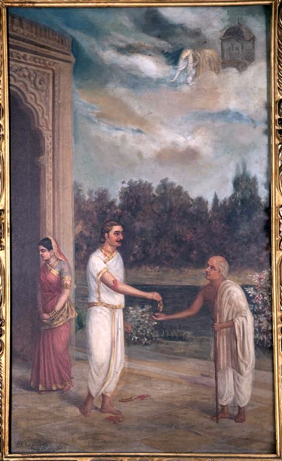

Karna (Sanskrit: कर्ण, IAST: Karṇa), also known as Vasusena, Anga-raja, and Radheya, is one of the main protagonists of the Hindu epic Mahābhārata. He is the son of the sun god Surya and princess Kunti (mother of the Pandavas), and thus a demigod of royal birth. Kunti was granted the boon to bear a child with desired divine qualities from the gods and without much knowledge, Kunti invoked the sun god to confirm it if it was true indeed. Karna was secretly born to an unmarried Kunti in her teenage years, and fearing outrage and backlash from society over her premarital pregnancy, Kunti had no choice but to abandon the newly born Karna adrift in a basket on the Ganges, in the hope that he finds foster parents.The basket is discovered, and Karna is adopted and raised by foster Sūta parents named Radha and Adhiratha Nandana of the charioteer and poet profession working for king Dhritarashtra.
Karna was born with aspects of his divine father Surya – the earrings and armour breastplate – that made him an immortal at birth. However, despite being warned, Karna prefers to lose these natural gifts in order to uphold his reputation as the one who always gives dāna (charity), particularly to Brahmins, as being more important than his own life.
As the battle-to-death between Karna and Arjuna becomes certain, Kunti – the mother of both, faints and later weeps in sorrow that her boys are bent on killing each other. In parallel, Arjuna's brothers and Indra – the father of Arjuna and a major Vedic deity – plan ways to make Karna mortal.
Surya meets Karna and warns him of Indra's plan to appear disguised as a Brahmin to divest him of his earrings and breastplate, and thereby his immortality. Karna disregards this warning and says that if the king of gods Indra comes to beg before him, and if he charitably gives to Indra, it will bring him "renown and fame", then argues that "fame is more important to him than anything else".[
Indra appears as predicted, and Karna cuts his birthmarks of immortality with a knife, and gives the blood-soaked donation to disguised-as-a-Brahmin Indra. The leader of gods in return praises him and gives him a missile that can only be used once and will kill any mortal or immortal.
Karna keeps the Indra's missile in reserve since it could only be used once, and aims to kill Arjuna with it. By the thirteenth day of the Mahabharata war, numerous soldiers, kings, brothers and sons of Kauravas (Karna's side) and Pandavas (Arjuna's side) had been killed, many by foul means.
The war had entered a brutal stage, according to the Mahabharata verses in sections 7.150–156. On the fourteenth day, Arjuna took revenge of his own son's death, while Bhima and his son Ghatotkacha wreaked havoc on numerous Kaurava battalions. The war that previously started after sunrise and stopped at sunset, did not stop on the fourteenth day's sunset as both armies continued a ferocious war to kill each other.
Bhima's son Ghatotkacha had a rakshasha lineage, and his powers of illusion to confuse the enemies grew to enormous proportions as the war dragged deeper into the fifteenth night.
Duryodhana and Karna's Kaurava friends plead that they are finished unless Karna does whatever it takes to kill Ghatotkacha. Karna hurls the "Indra missile" to kill Ghatotkacha. Karna thus saves his reputation among his soldiers, launches the missile and kills Ghatotkacha. Duryodhana and Kaurava army rejoice with the death of Bhima's son Ghatotkacha, but now Karna had exhausted the weapon that gave him an advantage over Arjuna.
As the second last day of the war and Karna's day of death dawns, Karna asks Duryodhana to convince king Shalya to be his charioteer since he plans to kill Arjuna that day. The South Indian king considers it below his dignity to be a mere charioteer and starts insulting Karna, who retaliates with words. Duryodhana intervenes, praises both, presses Shalya to guide the chariot for the critical battle.
Ultimately Shalya agrees. Since all previous commanders of Duryodhana had been killed, he anoints Karna as the senapati (commander of all his forces) for the first time. Karna and Shalya head into the battlefield together, though they keep insulting each other's abilities and intent, lack mutual devotion and teamwork.
Together they reach Arjuna with Krishna. They battle that day, each showing his martial skills of attack as well as his ability to neutralize all weapons that reach their chariot.
Then, the wheel of Karna's chariot gets stuck in the ground. Karna steps out of his chariot and is distracted while trying to unstick it. Arjuna – whose own son was killed by the Kauravas a day ago while he was trying to unstick his chariot's wheel – takes this moment to launch the fatal attack. Karna dies.